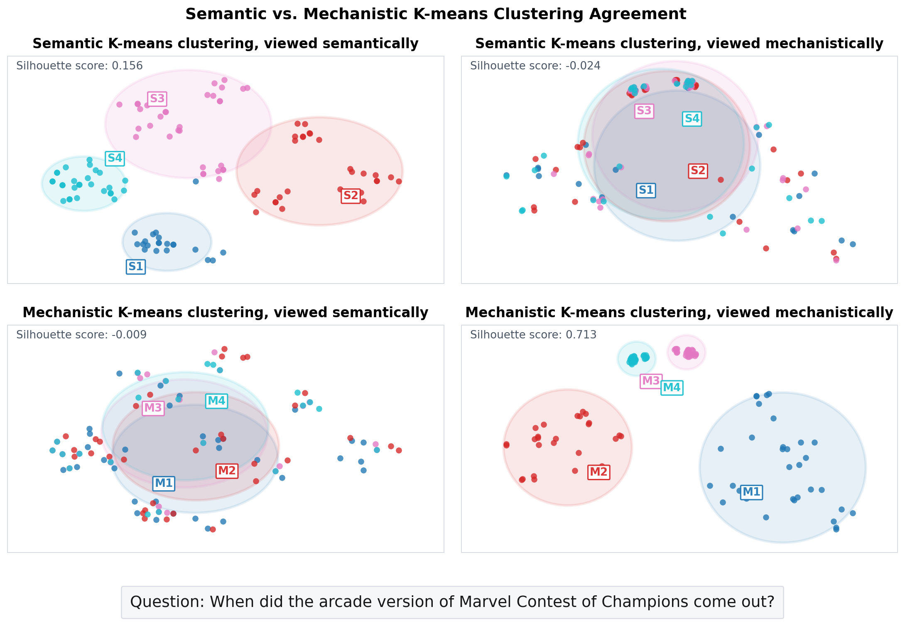
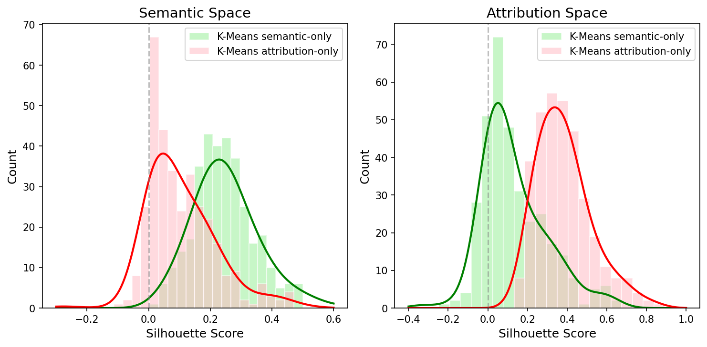
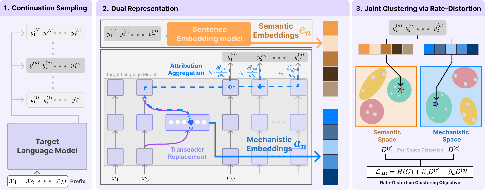
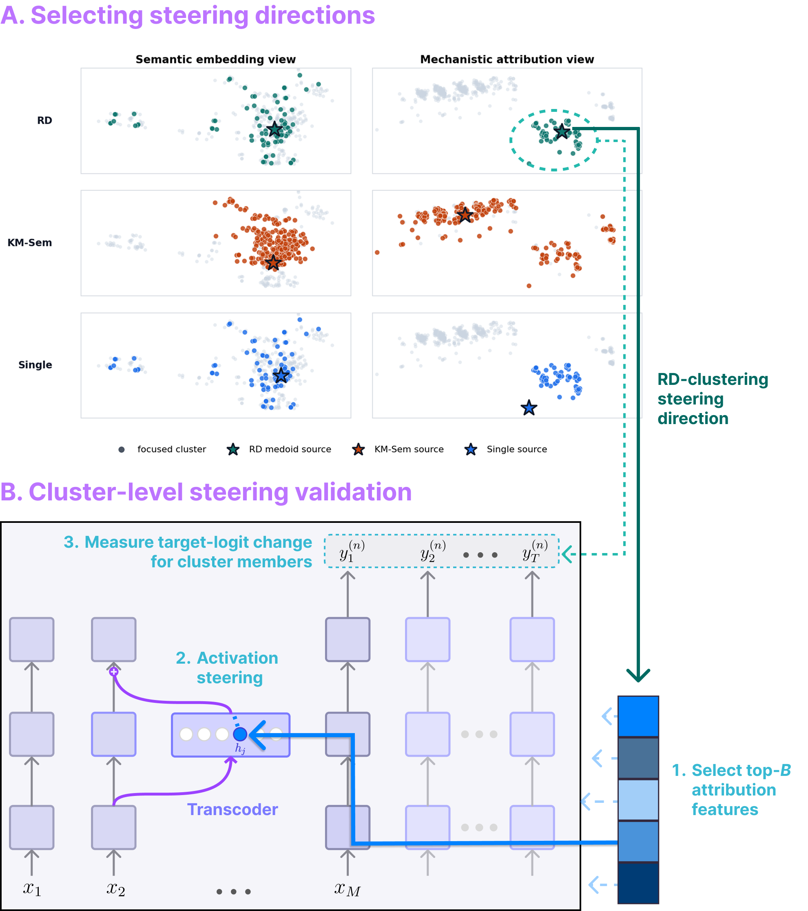
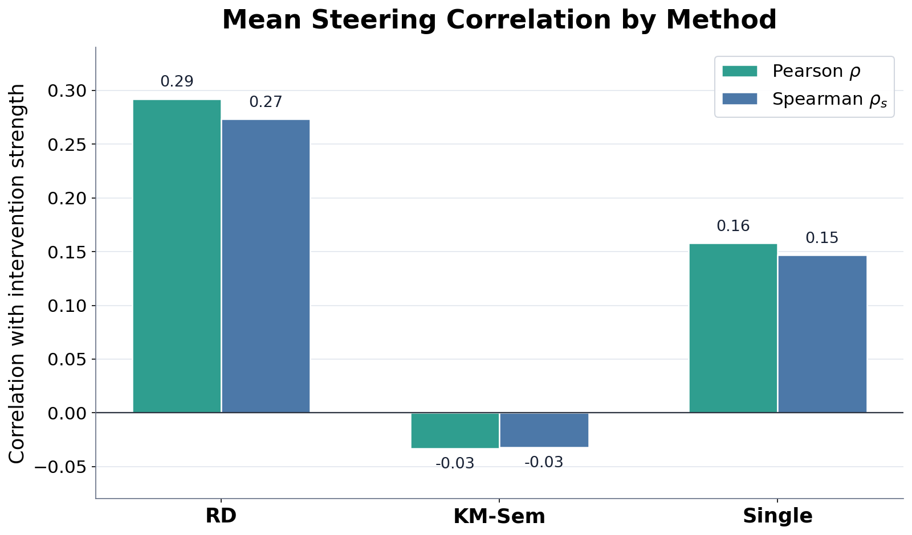

1. Sample Continuations
The method samples many likely continuations for one prompt and weights them by model probability.
When an AI model answers a question, there is usually more than one reasonable response it could give. Explaining only one chosen answer can miss these alternatives. Our method looks across many possible responses, groups the ones that mean similar things and seem to come from similar internal signals, and turns them into a short list of answer patterns. This approach helps people choose what to inspect, compare, and test before digging into the model's inner workings.
Circuit analysis usually explains one prompt paired with one chosen completion. That can miss variation across the model's continuation distribution. We introduce distribution-level unsupervised feature discovery: cluster sampled continuations using semantic content and sequence-level mechanistic attributions, without specifying target outputs by hand.
Each continuation gets a semantic embedding (a vector representation of what the continuation says) and a prefix-to-continuation attribution signature (which prefix features pushed the model toward this continuation). A rate-distortion objective trades off semantic coherence, mechanistic consistency, and cluster granularity. The resulting clusters expose modes that single-view baselines miss and give better targets for steering analyses.
Q: Who sings a Khmer version of "You've Got A Friend" in 1973?
A1 "...in 1973 was sung by Sok Sisowath..."
A2 "...was performed by Sok Sisowath, a notable Khmer singer..."
A3 "...was recorded in 1973 by Srey Mony..."
A1 vs A2: Semantic similarity 0.95; Mechanistic distance 132. Nearly the same answer, but far apart mechanistically.
A2 vs A3: Semantic similarity 0.62; Mechanistic distance 87. Different answer, but closer mechanistically.


Semantic similarity compares what two continuations say; higher means they sound more alike. Mechanistic distance compares their attribution signatures; higher means the supporting model features differ more. In the example above, A1 and A2 are semantically close but mechanistically far apart, while A2 and A3 are less semantically similar but mechanistically closer. Semantic similarity alone is not enough: answers that sound alike can use different mechanisms, and different answers can share mechanistic structure. The method asks whether we can find continuation modes that are both readable and mechanistically consistent before choosing targets for circuit analysis.
The method works at the distribution level: instead of explaining one chosen answer, it samples many likely continuations for the same prompt, represents each continuation in two ways, and then finds clusters that are coherent in both meaning and mechanism.

The method samples many likely continuations for one prompt and weights them by model probability.
Semantic embeddings capture what the continuation says. Attribution signatures capture which prefix features support it.
RD clustering keeps a small set of modes only when they reduce semantic and mechanistic distortion enough to justify the added complexity.
RD clustering treats each sampled continuation as a weighted point with two views: a semantic embedding for what it says and an attribution vector for the model features that support it. Starting from one cluster, the method alternates between assigning continuations to the cluster that minimizes entropy-regularized semantic and attribution distortion, updating cluster centers, and proposing splits. A split is kept only when its distortion reduction is worth the added rate, so the number of clusters emerges from the objective rather than being chosen in advance.

Steering asks a causal question about a model: what changes if we deliberately push one internal signal up or down during inference? In Pearl's language, this is an intervention rather than a correlation check. Instead of only observing that a feature appears with an answer, we change part of the model's internal state and measure the effect. In language models, activation steering does this by adding, removing, or scaling an internal direction or feature so the output logits shift.
Our cluster intervention applies this idea to answer modes. Can one cluster-level direction move the model toward a whole answer mode, rather than only one sampled continuation? For each discovered cluster, we choose a representative source continuation, select the signed top-B attribution features from that source, and scale those features at their original prefix position and layer. We then compare RD, which uses the medoid from the joint semantic-and-mechanistic cluster, with KM-Sem, a semantic-only K-means medoid, and Single, one randomly chosen attribution vector from the same RD cluster. Across steering strengths, a useful cluster direction should show a monotonic target-cluster logit change: amplification raises the cluster's relative preference, and suppression lowers it. In the demonstration below, the star marks the source continuation defining the steering direction.



Positive correlation means the intervention behaves directionally: stronger amplification or suppression produces larger target-cluster logit changes. RD medoid directions show the most consistent monotonic response, KM-Sem stays close to zero, and Single transfers only partially from one randomly chosen continuation. Implication: KM-Sem's failure suggests that semantic grouping alone can put continuations with shared semantics but different mechanisms into one cluster, yielding a source direction that does not transfer causally. Single's weaker transfer, compared with RD, supports the motivation that one sampled continuation can miss the cluster-level mechanism; RD is stronger because its medoid is selected from continuations aligned in both semantic and mechanistic views.
Held-out continuations answer that the renovation is funded by the production company or network.
A1 "...funded by the production company or network..."
A2 "...HNG... funded by the production company..."
A3 "...reality TV show... funded by the production company..."
Held-out continuations reject the premise as not widely recognized or not officially documented.
A1 "...not a widely recognized or officially named project..."
A2 "...not a well-known or officially recognized title..."
A3 "...no well-known entity... associated with a property or renovation project..."
Case-study implication: the RD medoid transfers to held-out continuations in the same mode, while a random single continuation can be weak or even reverse sign. This supports the paper's claim that the discovered direction is not tied to one surface string, but captures a cluster-level causal factor shared across continuations.
Our work treats RD clusters as useful mechanistic hypotheses, not complete circuit explanations.
@inproceedings{
cho2026shared,
title={Shared Semantics, Divergent Mechanisms: Unsupervised Feature Discovery by Aligning Semantics and Mechanisms},
author={Hyunjin Cho and Youngji Roh and Jaehyung Kim},
booktitle={Forty-third International Conference on Machine Learning},
year={2026},
url={https://openreview.net/forum?id=C9AhjL8aUZ}
}